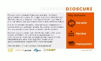

Dioscuri - the modular emulator
Dioscuri is an x86 computer hardware emulator written in Java. It is designed by the digital preservation community to ensure documents and programs from the past can still be accessed in the future.The Dioscuri emulator has two key features: it is durable and flexible. Because it is implemented in Java, it can be ported to any computer platform which supports the Java Virtual Machine (JVM), without any extra effort. This reduces the risk that emulation will fail to work on a single architecture in the future, as it will continue to work on another architecture.
Dioscuri is flexible because it is completely component-based. Each hardware component is emulated by a software surrogate called a module. Combining several modules allows the user to configure any computer system, as long as these modules are compatible. New or upgraded modules can be added to the software library, giving the emulator the capability to run these.
Dioscuri is the best choice to retain access to your old documents, games and other applications!
Latest news
18 March 2010 A new release of Dioscuri has been made available by the Dioscuri project team. The new version (0.5.0) offers the following improvements:
- improved command-line interface
- updated GUI
- improved command line interface options
- added a label on the GUI that shows in which mode the emulator is running: 16- or 32 bit
- Dioscuri can now be executed from any location on the host system and still finds it's configuration- and image files stored in the application folder
- separated some logic from the GUI class and moved it to the util.dioscuri.Utilities class
- extracted an interface from the main JFrame so that it will be easier to create an applet of Dioscuri
- started working on unit tests for CPU instructions
- improved Javadoc API
- various bugs fixes
This is the first release of Dioscuri in cooperation with the KEEP project.
For an overview of the full change history, please check the changelog.